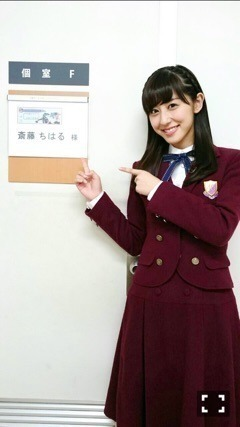

| 2016/01 19 Tue | 斎藤ちはる 嬉しい報告！アメフ トは奥深い。(´>∀< ｀)ゝ |
ちはるーむへようこそ\( ˆoˆ )/
皆さん雪大丈夫でしたかー？( ;o; )
雪解けが凍ってて、
歩くの危ないから気をつけてね(> <)！
今日は嬉しい告知があるのです\( ˆoˆ )/
なんと！
1月24日 NHK BS1 21:00〜21:50
「NFL スーパーボウル50年 今語ろう！伝説の名場面」
の司会を木村祐一さんと一緒に務めさせていただきます！！！
きゃー！！嬉しい！！
そして楽しかったんです！！
そしてものすごく勉強になったの！！
今年で50周年を迎えるスーパーボウルの歴史について、素晴らしいゲストの方々と一緒にお伝えしていきます！
私もまだまだ知らないことばかりなので
歴史を知れて物知りになった気持ちでした\( ˆoˆ )/
木村さん含めゲストの方々、皆様アメフト愛に満ち溢れていて、この番組を見ただけでお腹いっぱいになれるくらい...！盛りだくさんの内容になっています♪
私はまだまだ勉強不足...
みなさんに負けないくらいの知識を蓄えていきたいと切実に思いました(> <)！！
だけど、アメフトの楽しさをより実感できた時間でした\( ˆoˆ )/
もっと、アメフトの良さを伝えていきたい...！！
アメフトはものすごく奥が深いスポーツで、
たった数秒で流れが逆転して
たった数秒で勝ち負けが逆転して
たった数秒で誰もがスターになれる。
ただガタイのいいお兄さんたちがぶつかり合ってパスしてキャッチして走ってるだけじゃないんです。
ひとつひとつのプレーに意味があって、
ひとつひとつの行動が計算されている。
知力と体力の究極のスポーツが、アメフトです。
こんな楽しいスポーツを知らないなんて、人生損してる！！
って胸張って言えるくらい素晴らしいスポーツ。
アメフトの世界への一歩を、この番組を通じて踏み出してみませんか？？

じゃん！
こういう写真、嬉しい。。♡
今年の目標、
「アメフトの番組に出る！」が
１つ達成されました( ;o; )( ;o; )！！
早くも( ;o; )有難い( ;o; )
これに甘えず、もっと上を目指していく！
幸先のいいスタートになればいいな！
頑張ろう...！！！
乃木坂工事中、一実の真似したんだけど...
似てた...かな？( ◦˙ ˙◦ )
手に特徴がある、というところがもう
特徴的だよね〜さすがよ。
来週の内輪ものまねも出るよ♪
今度は誰のものまねを披露するでしょうか...！
この収録、笑いっぱなしですごく楽しかった\( ˆoˆ )/！
センター試験のみなさん、本当にお疲れ様でしたm(_ _)m！
今度は大学生のテストの番。
テストやらレポート提出やら忙しいけど、頑張りましょm(_ _)m！
最近ちょっとずつ前髪を伸ばそうかと迷ってます。
斎藤ちはる